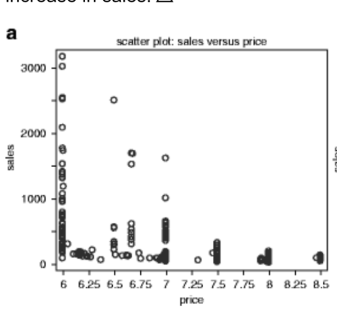

Uses evidence from the real world, i.e., observation, to answer questions
Econometrics
The ‘science’ of using data to answer economic questions. Uses statistical tools and often economic theory
Micro-data
Data where the unit of observation is an individual, household, firm, etc.
Empirical(ish) example
Trying to estimate demand curve, hypothesize linear function \[Q_d = a-bp\]
Suppose we know price is shifting because of costs, shifts in supply curve, or the firm is experimenting. Observe price & quantity data for a period where ceteris paribus is reasonable.
Fit ‘best’ line (minimise error) through these points
Estimate demand slope & intercept, use to make inferences
Never fits exactly. why not?
Ceteris paribus
All [most] economic theories employ the assumption that ‘other things are held constant.’
Above, demand may differ between weeks/stores, weather changes, etc.
the points may lie on several different demand curves, and attempting to force them into a single curve would be a mistake.
\(\rightarrow\) Carefully ‘control’ for other observable factors (a partial solution)
But what if we just observe a dataset of ‘price and quantity’ in a large market?

Can we estimate a demand curve?
A supply curve? Both?
Application 1A.3: … Changing world oil prices (time-permitting)
Why did price rise to US$130 in 2008 and fall to $50 by March ’09?
China & India’s economies grew \(\rightarrow\) growth in the world economy by 3-4% per year
(Various calculations) \(\rightarrow\) Demand shifts out from \(Q_D = 85 - 0.4P\) to:
\[Q_D = 112 - 0.4P\]\[Q_S = 55 + 0.6P\]
\(\rightarrow\) solves to \(P=57, Q=87\)
Overall price inflation, US$ devaluation \(\rightarrow\) gets us to about $94. So why the $130 price?
First problem set: coverage
See Handout/web-book
Representative answers for each problem set given about 1-week after posting
Five support classes (tutorials), cover parts of these
E.g., …
Plotting supply and demand “for orange juice”, solving, for equilibrium price, excess demand/supply at non-equilibrium prices
Example of some (tricky) MCQs from previous exams
E.g., “True or false: It is valid to plot observed prices and quantities traded in a market and fit a line through them to estimate a market demand curve.”
Discussion questions: practice writing concise essays and bullet points
Preamble to Utility and Choice
(NS - Chapter 2)
Motivation
Consider a decision you recently made?
Define this decision clearly.
How do you think you decided among these options?
2 minutes: discuss with your neighbour
Suppose I asked you
‘State a rule that governs (determines/characterizes) how people do make decisions’…
I want this rule to be…
Informative (it rules out at least some sets of choices)
Predictive (people rarely if ever violate this rule)
Similar question:
‘State a rule that governs how people should make decisions’..
By ‘should’ I mean that they will not regret having made decisions in this way.
2 minutes: discuss with your neighbour
If people did follow these rules, what would this imply and predict?
Rules defined as ‘axioms about preferences’
‘Standard axioms’ \(\rightarrow\) (imply that) choices can be expressed by ‘individuals maximising utility functions subject to their budget constraints’
\(\rightarrow\) yields predictions for individual behavior, markets, etc.